Project 2 (Laundrification)
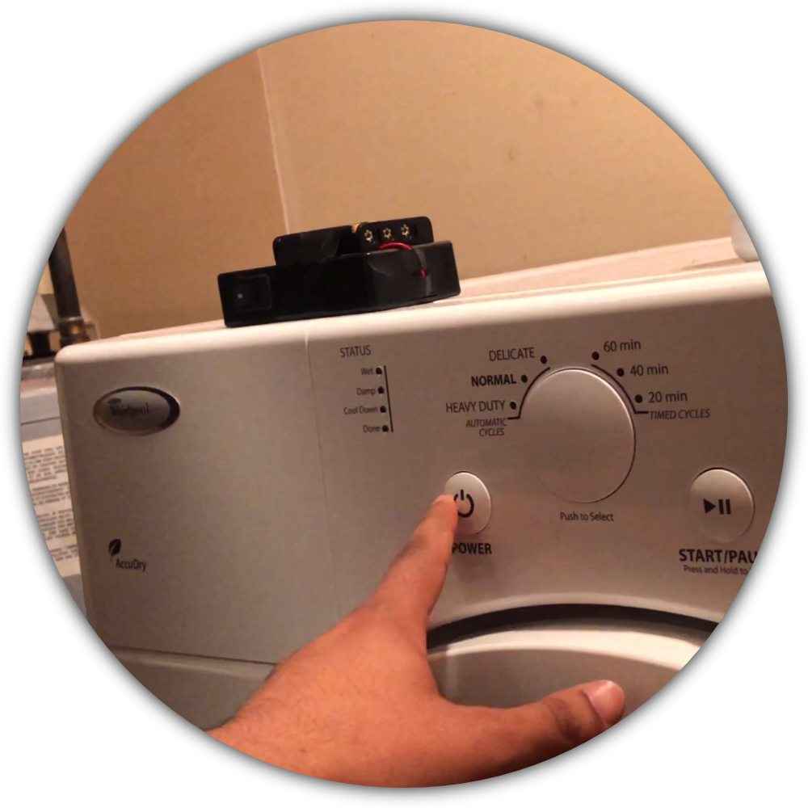My 10 Sketches
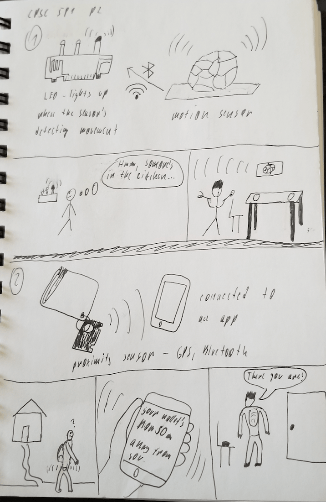The first two ideas. One involves a motion sensor and the other one some kind of wireless receiver. In case of the first idea the goal was to have a motion sensor placed in spaces with a lot of traffic inside a house. Whenever the sensor detects anyone being near it an LED goes off notifying the user on that end that the space is being used by someone else. As for the second idea a wireless receiver'd be connected to user's phone tracking specific items. When an item starts getting farther away from the phone a notification is sent telling the person that they might have left an important item behind.
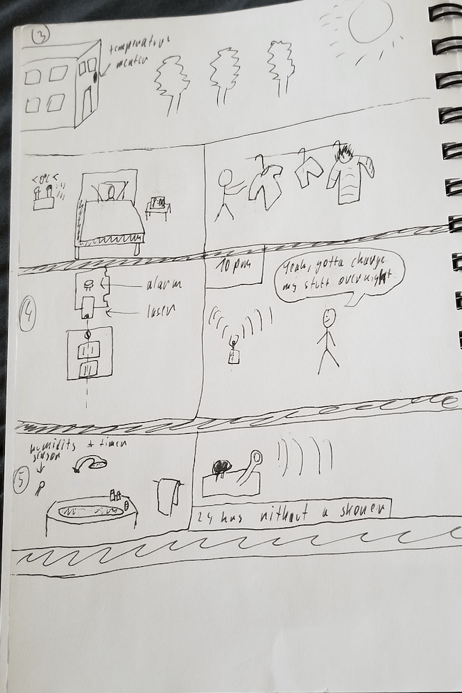The idea 3 involves a simple temperature meter that's connected to LEDs which go off based on input temperatures. This tells the user how to dress for the day. My favorite, number 4, simply puts a laser above a certain outlet and checks if anything's connected at a certain time of the day. If nothing's connected it means that the user's not charging anything and a buzzer goes off. The purpose is to remind the user to charge their devices overnight. And the number 5 was more of a joke than anything else. A moisture sensor connected to a buzzer that goes off after 24 hours of not detecting any moisture reminding us to take a shower.

Another favourite of mine was #6. This is a simple scheduling board that has LEDs based on the number of people living in a shared accommodation. It also has a simple button. The device can be placed on a wall and is supposed to remind tenants to clean up. Once a particular person is done, they simply press done and the responsibility shifts to the next person. Number seven is very similar to what we went with in the end. It's a simple detection system to tell the user when laundry's done. It uses a microphone connected wirelessly to a buzzer to achieve this.
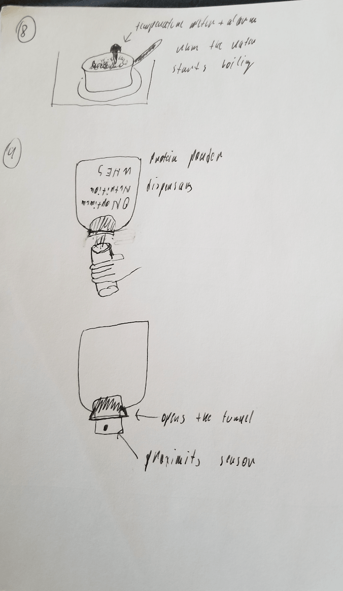Number 8 is a temperature meter connected to a buzzer that goes off when a certain temperature's reached. It could be useful for example to notify you when your water starts boiling. Number 9 is an automatic powder dispensary. I see myself using this one to avoid having to use the scoop every time I'm going for some protein powder.
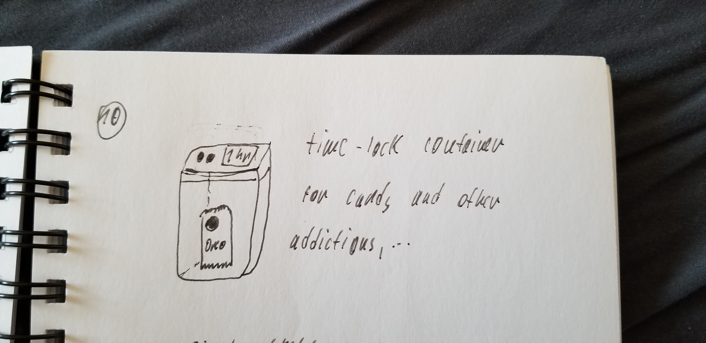And lastly, a time lock container for your cookies, cigarettes and other addictions, you name it. A simple solution to enforce some moderation...
Refined Sketches
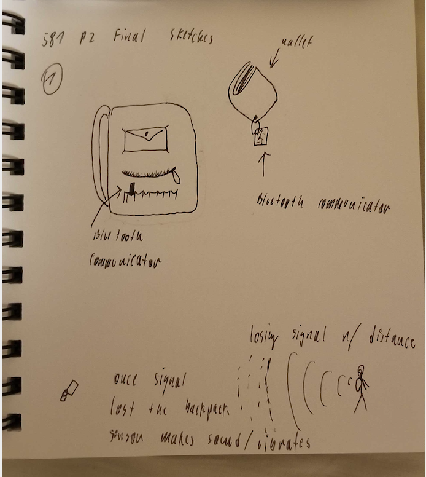 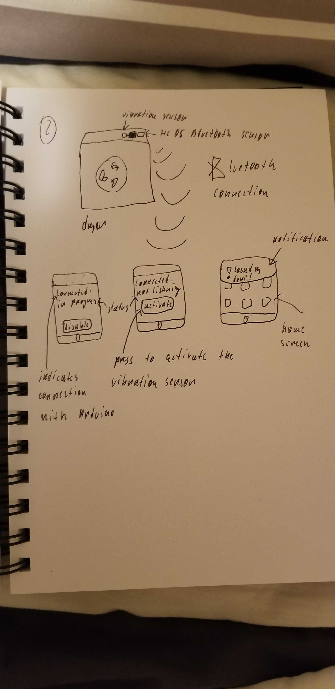For the refined sketches I went with the wireless transmitter idea for valuables. The idea was that there'd be a receiver placed wherever you want the specific item to be. Then there'd be a transmitter on the item itself. In this case the
transmitter is a bluetooth module and the moment the module starts losing connection (i.e. getting out of the Bluetooth range) the receiver will start beeping. In this case the receiver is on your backpack where you'll likely want your
wallet to be.
For the second one I was thinking about using a Bluetooth module as well. This time it'll be reacting to data from a vibration sensor. Once your laundry's done the vibration sensor detects that and the adjacent Bluetooth module pushes
a notification onto your phone.
Other's Refined Sketches
Andie, Ahman, Zach and Bryan had some interesting variations. Take a look before we go through them:
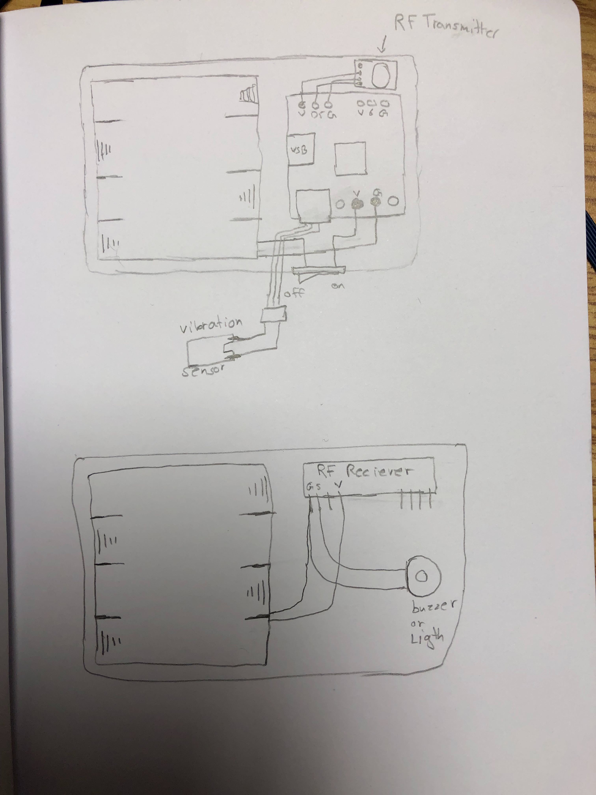 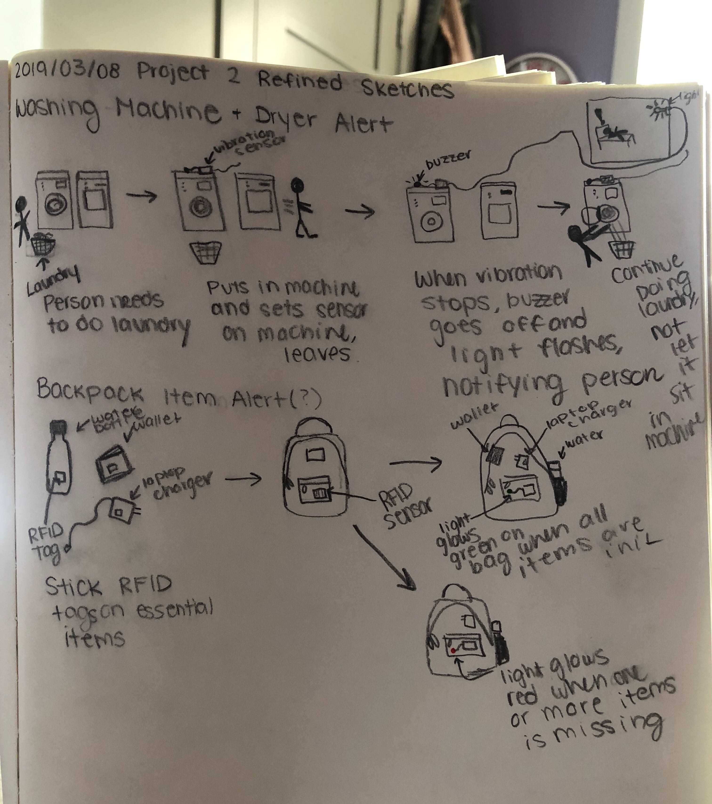 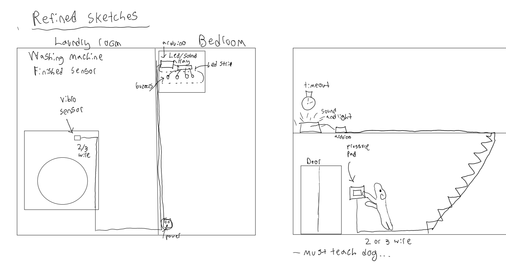 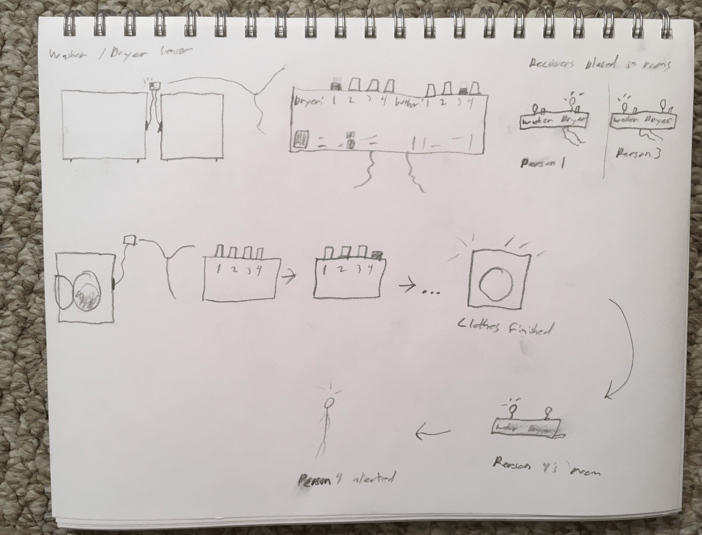 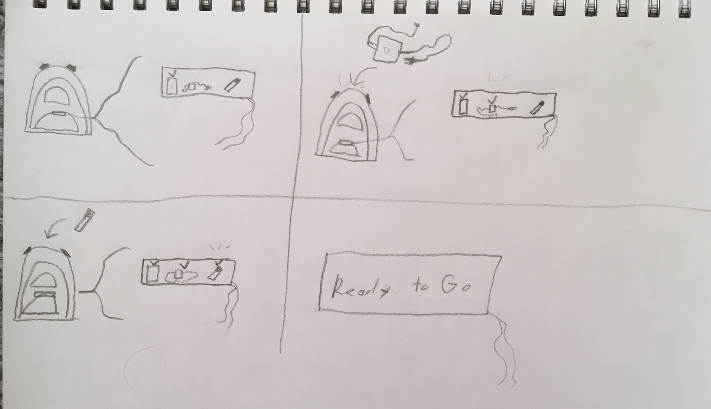As you can see we primarily wanted to focus on the idea of not losing your things and the laundry idea. There was also an idea to detect a dog wanting to go outside and scratching the door so Bryan made a sketch for that as well. Other than that, it's variations on the first two ideas. Zach was thinking about making the laundry detection system a bit more complicated and Ahmad was already thinking about specifics for the laundry idea since he had some RF equipment for Arduino at home - which is what we used eventually.
The Final Product
The idea we settled on was the laundry one. We ended up using an RF transmitter and an RF receiver to send data wirelessly and achieve a useful design. There's a vibration sensor on the transmitter side which is supposed to go on top of your dryer or washing machine. We made sure that there was a delay in detecting vibrations (given the quiet moments in washing machine cycles) so that it doesn't notify the user when it's not supposed to. Once your laundry's done the receiver (which you're supposed to carry with you) connected to a buzzer and an LED plays the classic Mario theme for you and the LED follows the rhythm accordingly. That's your notification... The laundry's done. There's also a switch on the transmitter/vibration detector side so that you can turn the system off when you're not using it.
The Creation Process
The idea for the laundry detector came originally from me. We then took it further in the refined sketches. As for the actual design process, we based the execution on the sensors we had available and put everything together in the tutorials as a team. That includes coding as well, we worked on it together and everyone was contributing as we were writing the code. For the Mario theme music - the buzzer only plays 2 sounds (low and high signal = the only two types of signal the RF system would allow for) and uses delays to create the music. We stole the pattern from an online source and added a reference to it in the source code.
GitHub
The code: https://github.com/Be-bo/581_p2_special